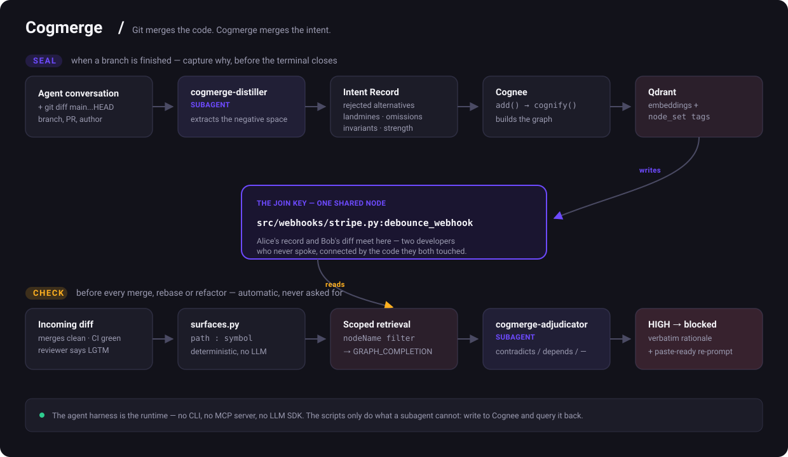

Git merges the code.
Cogmerge merges the intent.
Alice, PR #121 Adds debounce_webhook(). Tells her agent why:
"Stripe caps us at 25 req/s. I rejected a Redis queue —
extra failure mode, no monitoring. No test, because
reproducing it needs a live rate limit. Don't remove this."
Then she closes the terminal. The conversation is gone.
Bob, PR #128 Asks his agent to clean up the webhook module.
His agent sees an untested no-op wrapper. It inlines it away.
git merge clean. No conflict. Not even a nearby line.
CI green. Nothing tested it, by design.
AI reviewer "LGTM, nice simplification."
production 429s from Stripe, next Tuesday.
None of it has anywhere to live. So an agent asked to merge infers intent from syntax — and inferred intent is a hallucination with a clean diff attached.
Alice ──▶ [ intent: PR #121 ]──┐
├──▶ src/webhooks/stripe.py:debounce_webhook
Bob ──▶ [ diff: PR #128 ]──┘ one shared node
Two developers who never spoke, connected by the one symbol they both touched. That node is the join key — and the whole product.

$ cogmerge check --base main --head refactor/webhook-cleanup 🔴 HIGH — contradicts a hard invariant from PR #121 (@alice) You remove: debounce_webhook() → src/webhooks/stripe.py:41 She wrote: "Stripe caps this endpoint at 25 req/s. The wrapper is NOT dead — it IS the rate limit. I rejected the Redis queue on purpose: extra failure mode, no monitoring." Strength: hard_invariant · no expiry ▸ Re-prompt for your agent: "debounce_webhook is load-bearing: it enforces Stripe's 25 req/s cap. Restore it — and do not replace it with a queue, that alternative was explicitly rejected in PR #121."
Git merged it. CI passed it. The AI reviewer approved it. The only thing that caught it was memory of a conversation that used to be deleted.
Runs before every merge, unprompted. A HIGH finding stops it and hands back the original author's words.
/cogmerge why do we debounce? in Slack — answered in the words of whoever decided, whether or not they still work here.
node_set, not a full scancurl -fsSL https://raw.githubusercontent.com/peresramirez/Cogmerge/main/install.sh | bash